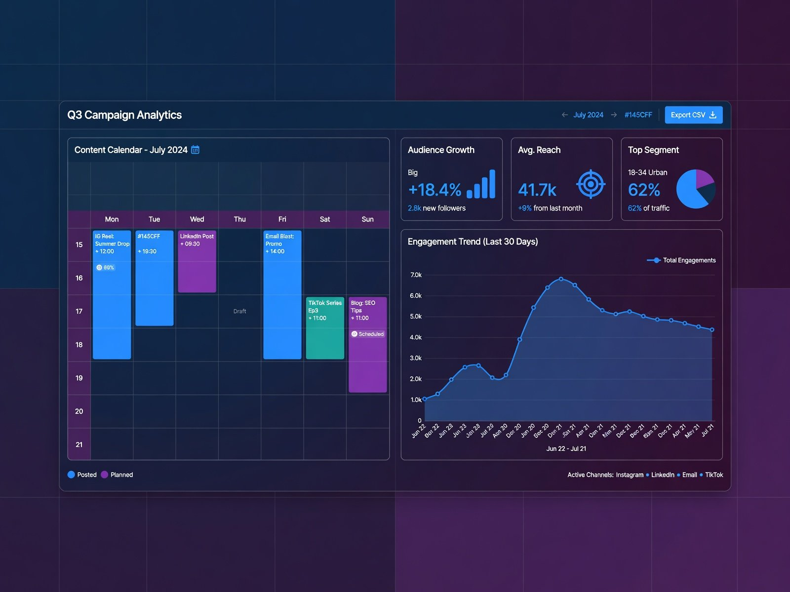
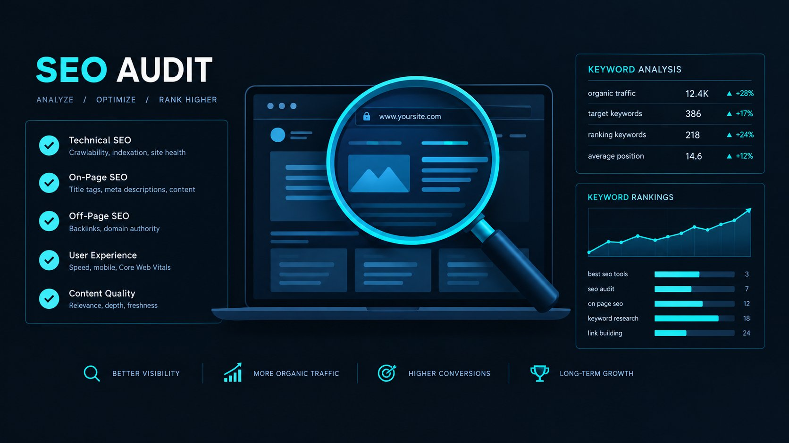
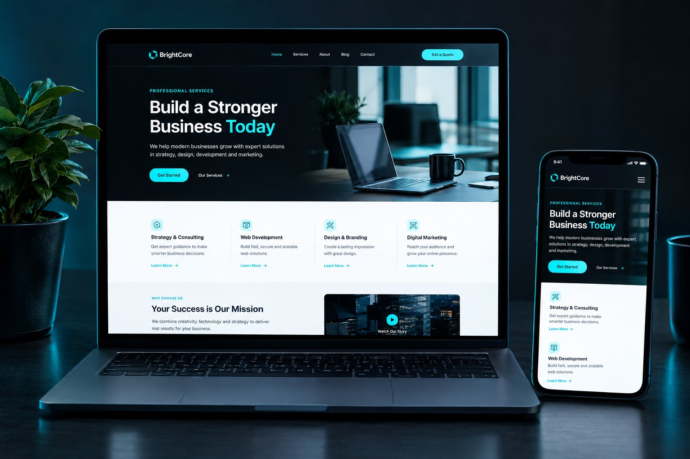

BLOG
Practical notes on marketing & WordPress
Short, useful guides on SEO, advertising, content and website design.

Digital Marketing
A practical digital marketing plan for a small business
A useful marketing plan starts with the business goal and audience, then chooses a few channels that can support each other.
Read article →

SEO
On-page SEO basics for a WordPress website
A clear page structure helps visitors understand a service and gives search engines useful context about the content.
Read article →
Paid Advertising
What to prepare before launching Meta Ads
Good campaign setup begins before opening Ads Manager: clarify the offer, audience, destination and measurement plan.
Read article →

WordPress
Designing a WordPress landing page around a campaign
A campaign landing page should continue the promise of its ad, make the offer easy to scan and keep the enquiry path simple.
Read article →